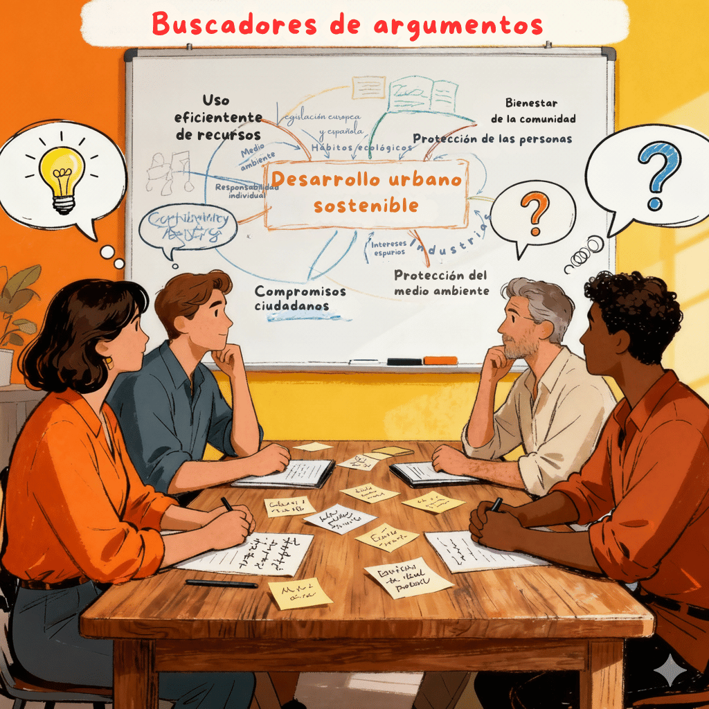

1. Buscadores de argumentos

Ya se ha indicado en la presentación de esta situación de aprendizaje: argumentar es una actividad cotidiana. De manera habitual, en nuestra vida diaria, de un modo más o menos formal o estructurado, estamos tratando de convencer o persuadir a otras personas de que tenemos razón sobre alguna cuestión en particular, o bien, al contrario, estamos rechazando afirmaciones o informaciones que nos llegan desde diversos ámbitos (familia, centro educativo, relaciones personales, informaciones de interés general vía redes sociales o vía medios de comunicación de masas…). Sea para persuadir o convencer a otros, o sea para rechazar ideas de otros, recurrimos a la argumentación, es decir, explicamos por qué estamos en lo cierto o bien rechazamos la postura o posición de otros. En consecuencia, buscar argumentos no es otra cosa que expresar oraciones que se ofrecen o presentan como apoyo para demostrar una afirmación o tesis.
Con el fin de que comprobéis que, efectivamente, argumentar es una tarea cotidiana y natural y al mismo tiempo a modo sencillo de preparación y mini ensayo para la participación en el debate académico, vamos a ensayar una pequeña tarea en grupo que denominaremos buscadores de argumentos.
FASES E INSTRUCCIONES:
0. Organización del equipo y roles. Constituiréis grupos de trabajo compuestos por cuatro miembros. Durante toda la situación serán varias las actividades— incluido el reto final: el debate académico— donde se trabajará en equipo de cuatro personas. Por tanto, deben ser los equipos de esta actividad y las siguientes, equipos estables y bien organizados. En esta actividad, no habrá roles especializados entre los miembros del grupo. Simplemente, debéis designar a un portavoz que trasladará y explicará al grupo de la clase los argumentos hallados en su subgrupo.
1. Comprensión de la tesis.
Para realizar esta tarea, la afirmación o tesis que debéis probar (o refutar, es decir, negar, si así lo consideráis) mediante argumentos es la siguiente: ¿Cree que la actual situación económica y social de España es precaria? En consecuencia, debéis buscar razones o argumentos que prueben que la situación económica y social de España en la actualidad es precaria, o bien, si decidís refutar esta afirmación que, en realidad, se presenta como pregunta sesgada, a saber, sostener con argumentos que la situación económica y social de España actual es sólida. Sea cual sea (afirmación o refutación) de la tesis propuesta, debéis hallar en el seno cada equipo argumentos que apoyen vuestra tesis, sea esta la situación precaria, económica y social, de España, sea su contraria, la situación sólida o boyante, económica y social, de España. Como información curiosa, os indicaré que esta pregunta que motivará vuestra reflexión y búsqueda de argumentos fue la que se planteó al alumnado en el examen de Lengua castellana y Literatura en la prueba de acceso a la universidad (PAU) de las universidades andaluzas el pasado mes de junio de 2025.
- Recomendaciones:
- Delimitar el alcance temporal y el significado y sentido de “precaria” vs. “sólida”, en relación con la economía y sociedad españolas, antes de generar argumentos.
- Acordar si se defenderá o refutará la tesis para orientar la búsqueda de razones.
2. Tormenta de argumentos
Puesto que esta búsqueda de argumentos no recurriremos a fuentes de información externas que validen o invaliden vuestros argumentos, durante 10–15 minutos registraréis, en una lluvia de ideas, razones a favor y en contra sin filtrar. En esta fase debéis priorizar la cantidad sobre la calidad: es recomendable que, al menos, generéis entre los cuatro iembros unos 10-15 argumentos. Posteriormente, delimitaréis y juzgaréis la calidad y robustez de los argumentos hallados.
3. Análisis guiado de argumentos (pautas de reflexión)
Con el fin de que podáis evaluar el tipo y funciones de esos argumentos hallados, podéis aplicar al argumento hallado este sencillo cuestionario:
- ¿Qué idea sostiene? → Enunciar con precisión la subtesis o afirmación de respaldo.
- ¿Qué función cumple? → Identificar si es causa, consecuencia, ejemplo, analogía, autoridad o dato.
- ¿Qué efecto produce? → Explicar si aporta claridad, urgencia o credibilidad, y por qué.
4. Selección y reformulación
Clasificados los argumentos, pasaréis a la fase de elección. De entre los argumentos encontrados, debéis elegir 4–6 argumentos finales, así como reformularlos para mejorar precisión y cohesión.
5. Presentación breve y mapa mental de la clase
En 2–3 minutos, el portavoz de cada subgrupo presenta ante el grupo clase la postura de su subgrupo ante la tesis, así como dibuja un mapa mental con los 4–6 argumentos seleccionados y justificación de la solidez de los mismos para defender la postura del subgrupo. De ese modo, finalizada la clase, podéis construir un completo mapa mental en cuyo centro aparezca la tesis y como constelaciones los diferentes argumentos o ideas de apoyo que permiten sostener esa tesis. Más abajo, se os facilita un ejemplo de este mapa mental argumentativo para otra tesis distinta.
Para facilitar y guiar el proceso, se incluye la siguiente lista de cotejo por fases:
| FASE DEL PROCESO / PASOS | ¿Completado? (Marca ✔) |
|---|---|
| FASE 1ª: COMPRENSIÓN DE LA TESIS | |
| Paso 1º: ¿Se ha definido la postura (defensa/refutación) y el alcance y sentido de “situación económica y social” y de “precaria/ sólida”? | |
| FASE 2ª: GENERACIÓN DE ARGUMENTOS | |
| Paso 2º: ¿Se han generado al menos 10–12 ideas iniciales para el mapa mental? | |
| FASE 3ª: ANÁLISIS GUIADO | |
| Paso 3º: ¿Se ha respondido por escrito para los argumentos seleccionados a: ¿Qué idea sostiene? / ¿Qué función cumple (causa, consecuencia, ejemplo, analogía, autoridad, dato)?/ ¿Qué efecto produce(claridad, urgencia, credibilidad)? | |
| FASE 4ª: SELECCIÓN Y REFORMULACIÓN | |
| Paso 4º: ¿Se han elegido 4–6 argumentos finales y se han reformulado para ganar precisión, cohesión y fuerza persuasiva? | |
| FASE 5ª: PRESENTACIÓN | |
| Paso 5º: ¿Se ha preparado una exposición de 2–3 minutos con la postura ante la tesis y se dibuja un mapa mental con 4–6 argumentos justificados? |
{kind=link}